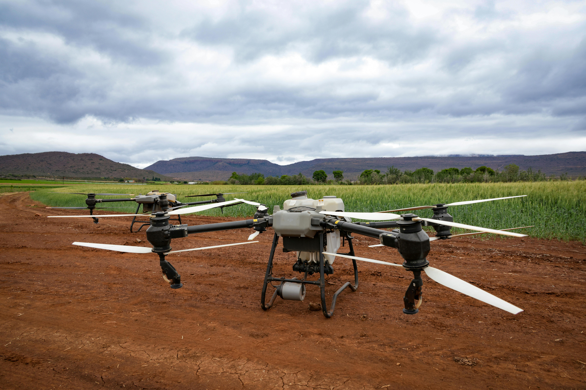
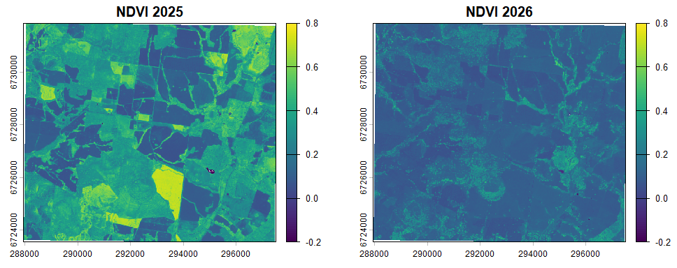
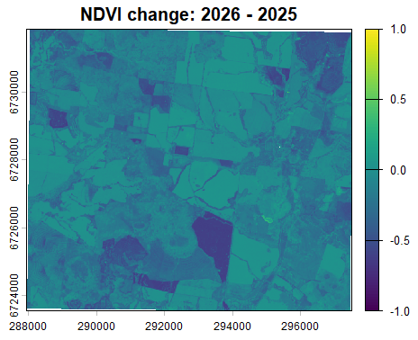
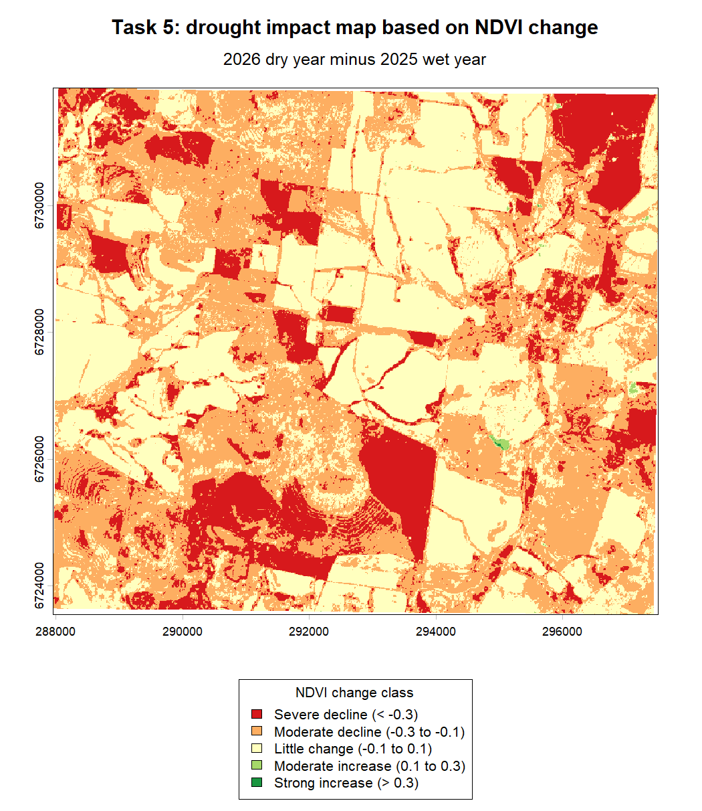

Commercial Platforms
AerisAg can use available commercial drone brands where they are suitable for mapping, inspection and agricultural work.
Drone Mapping and Aerial Land Assessment
Drone technology is a major part of the AerisAg business. AerisAg uses a combination of commercially available drone platforms and purpose-built drone systems designed for specific land management tasks.
This includes fixed-wing drones for larger area coverage and multi-rotor copters for detailed inspection work, low-altitude imagery, targeted spraying and agricultural applications.

AerisAg can use available commercial drone brands where they are suitable for mapping, inspection and agricultural work.
AerisAg also develops purpose-built drone systems for specific field tasks, including imagery and spraying applications.
Fixed-wing drones are useful for larger rural properties because they can cover broad areas efficiently.
Multi-rotor drones are useful for detailed imagery, low-altitude inspection and targeted application work.


